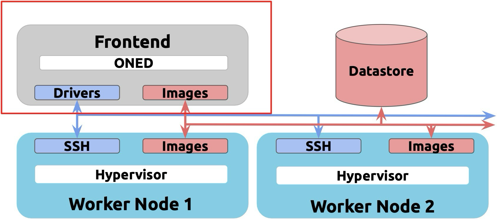

Notes on OpenNebula
Table of Contents
- Notes on OpenNebula
- Table of Contents
- Typical Architecture
- Sunstone
- Configuration
- CLI
- Virtual Networks
- Marketplace
- Storage
- Virtual Machines
- Users, Groups and Permissions
Typical Architecture

Sunstone
- Is the graphical user interface of OpenNebula;
- Responsible for serving the Web GUI, oned service, perform environment monitoring as well as management of network, storage or VMs
- Listens on 2616/tcp;
- Same website for admins and users, but has different views based on permissions;
- Each user can set SSH keys, 2FA and labels on his account;
- Labels can be used to categorize resources.
- Inspect
/var/log/one/oned.logand/var/log/one/monitor.loglog files in case there is an error in the frontend.
Configuration
- To make sure the state of the cloud is persistent, OpenNebula will keep it stored in a SQL database;
- The options are SQLite (automatic), MariaDB and MySQL;
- This is configured on
/etc/one/oned.confat the host; - During the installation of the software the system user
oneadminwill be created. Services and CLI tools are going to be used by this user; - During the first launch OpenNebula is going to create a Sunstone admin user for the deployment. Credentials are stored in a dedicated file
.one/one_auth; - We must configure hosts that are going to run the VMs before adding them to a OpenNebula cluster and provide them with monitoring and virtualization drivers;
- To configure the host we must add the OpenNebula repo, install
opennebula-node-kvmand configure passwordless ssh connection from the Sunstone node to the host and vice versa; - Then on the Sunstone section
Infrastructure/Hosts, add a KVM host by putting its IP; - Through the CLI:
sudo -i -u oneadmin
onehost create 'node2.dev.corp' -i kvm -v kvm
onehost show 1
CLI
oneuser: Manage Usersoneimage: Manage Imagesonegroup: Manage Groupsonetemplate: Manage Templatesoneacl: Manage ACLsoneacct: Accounting Toolonehost: Manage Hostsonemarket: Marketplace Toolonecluster: Manage Clustersonedb: DB Toolonevnet: Manage Networksoneflow: Manage flows (services)onedatastore: Manage Datastoresonemarketapp: Import marketappsoneshowback: Showbackonevrouter: Manage virtual routersonevdc: Manage VDCsonesecgroup: Manage sec. groupsonevcenter: Import vCenter resourcesoneprovision: Manage provisionsonecfg: Manage configuration filesoneprovider: Manage providersonezone: Manage zones onehook Manage hooks
Flags to output in a machine-readable format:
-jfor JSON-xfor XML-yfor YAML
Virtual Networks
- Can be created under the Networks section of Sunstone;
- Can be a
Bridge,Open vSwitch,VXLAN, etc; - On the
Addressestab, we can set the IP range of that network; - On the
Contexttab, we can set gateway, DNS and IP assignment method (DHCP or static); - On the
Virtual Networksubsection, we can make a reservation on a certain network, meaning a portion of the network is going to be locked and available only to specific resources. The network is partitioned by IP address; - On the
Leasetab, we can also hold a specific IP address on a virtual network, so it cannot be used nor reserved; - The
Network Templatessection can be used to speed the creation of new virtual networks; - We can use the CLI as such:
onevnet create <path/to/file>where file is a textfile containing parameters;
Marketplace
- Is the repository of pre-build images, VM templates and service templates;
- Can be public or private;
- The public marketplace contains ready-to-use images;
- These images are based on the vanilla ISOs, but with virtualization packages;
- The different marketplaces configured are found under the
Storagesection,Marketplacessubsection; - The
Appssubsection contains all images available to the user;
Storage
- We don't create a VM based on an image, but rather on a template. The template points to an image;
- Multiple VM templates can use the same image;
- The
Imagessubsection contains the downloaded images ready to be used, as well as system snapshots, which are considered an image; - A
datastoreis the location where files are saved. It can be: Images Datastore, which stores the base operating system images, persistent data volumes, CD-ROMs.System Datastoreholds disks of running Virtual Machines. Disk are moved from/to the Images when the VMs are deployed/terminated.Files & Kernels Datastoreto store plain files (not disk images), e.g. kernels, ramdisks, or contextualization files.- Create a new datastore at
Storage/Datastoreson Sunstone; - Or use the CLI
onedatastore create <path/to/file>where file is a textfile containing parameters; Servicesare images that contain an app (such as Wordpress) along with an OS. They are also stored on a datastore.
Virtual Machines
- Currently instantiated VMs can be found at
Instances/VMson Sunstone or queried through the CLI withonevm; VM Templatesare a textual representation of a VM;- It contains pointers to images, parameters and other configurations;
- Some of those can be adjusted only by the administrator;
- Services also rely on VM Templates;
- VM Templates can be edited on the
Templatessection or queried through the CLI withonetemplate; - VMs can be deployed alone or in batches;
- VMs can be accessed from Sunstone via VNC;
- VMs can be backed up or turned into an Image;
- We can make a snapshot of the VM's disk or of the entire VM;
- Restoring a disk snapshot is only possible with the VM powered down;
- Restoring a VM snapshot is possible at any time;
- VM configuration can be changed while it is running. It'll go into a hotplug state to apply the changes;
- VMs can be deployed through the CLI
onevm create --cpu 1 --memory 1024 --disk 2 --nic 5;
Users, Groups and Permissions
- Permissions exists for
owners,groupsandothers; - The levels are
use,manageandadmin; Useis for operations that do not modify the resource,managefor the ones that modify andadminfor high responsability modifications;- Each user is going to be attached to at least one group;
- Each group may have a separate group administrator. Group administrators are delegated with permissions to manage groups resources and add new users;
- By default, OpenNebula has two groups -
oneadminandusers; - By default, OpenNebula also going to have two users - oneadmin (if one_auth wasn't altered) and serveradmin(service user used for internal purposes);
- Groups can be created at
System/Groupson Sunstone or through the CLIonegroup create --name ops --admin_user ops-admin --admin_password 'Pa$$w0rd'; - can be created at
System/Userson Sunstone or through the CLIoneuser create basic_user 'Pa$$w0rd' --group 102;